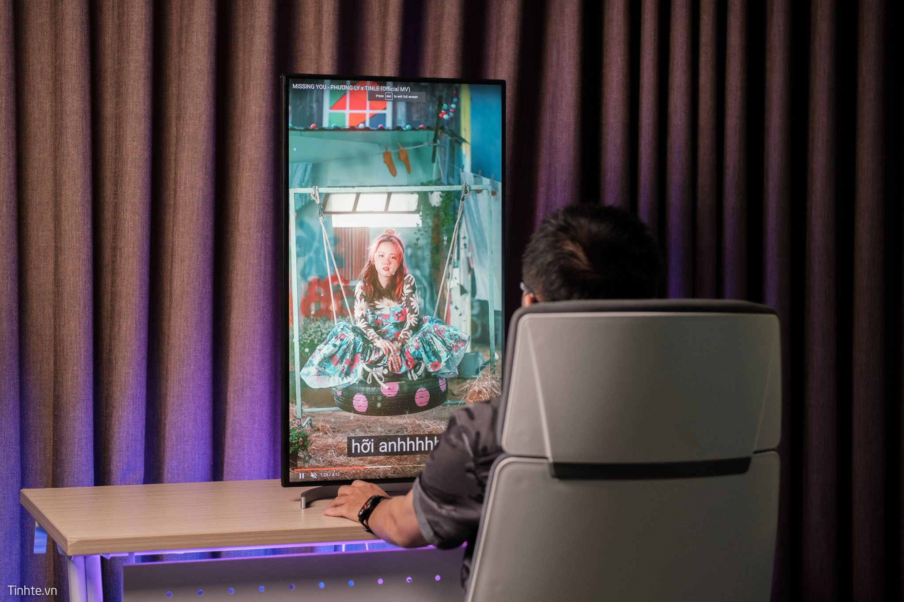

LG sẽ là cái tên được nhắc tới nhiều khi mình nghĩ tới một chiếc màn hình để mở rộng không gian làm việc trong hệ sinh thái Macbook và từ nhiều năm, các đời UltraFine của LG là điển hình cho việc đó. Đối với phiên bản 2020 32UL950, không chỉ có độ phân giải 4K trên màn hình kích thuớc 32 inch 16:9 mà chúng ta còn có thêm những tiện ích giá trị khác, điển hình như 2 cổng ThunderBolt 3 hỗ trợ Daisychain, cho phép đơn giản hóa mọi loại cáp kết nối.
Thông số kỹ thuật cơ bản của LG UltraFine Display 32UL950
LG chia ra 3 sản phẩm màn hình của họ là UltraFine, UltraGear và UltraWide. Nếu UltraGear tập trung nhiều cho game thủ, UltraWide tập trung về độ dài và cong thì màn hình UltraFine có thiết kế phù hợp với đại đa số người dùng hiện nay, và khả năng tái tạo màu sắc rất tốt. Màn hình sẽ phục vụ tốt cho nhu cầu làm việc và dùng tốt với nền tảng Mac.
Phần chân đế nửa vòng tròn của màn hình UltraFine rất thuần tuý trong thiết kế từ xưa đến nay của LG. Chân đế này được nối ốc với phần chân trụ, tuy chân trụ được làm bằng nhựa nhưng khi di chuyển màn hình lên xuống thì chân trụ không có hiện tượng rung lắc hay thiếu chắc chắn.
Ngàm nối với màn hình theo chuẩn VESA ở phía sau cho nên anh em hoàn toàn có thể mua những phần chân đế khác bên ngoài đúng chuẩn để gắn màn hình này. Có một cái ngàm nhỏ cho phép người dùng đi dây nhợ vào đó để bớt rối hơn, không cần phải dùng giải pháp dây rút bên ngoài.
Bạn có thể kéo ngã phần màn hình này về phía trước khoảng 5 độ và phía sau là 20 độ, thậm chí là xoay cả phần màn hình về 90 độ để sử dụng máy ở chế độ dọc, phục vụ cho nhiều nhu cầu làm việc và giải trí khác nhau.
Mặt sau màn hình là phần mặt lưng ốp nhựa màu trắng rất truyền thống của LG, có các cổng kết nối bao gồm 2 cổng USB-C Thunderbolt 3, hỗ trợ luôn kết nối Daisy chain 4K, cổng DisplayPort (1.4), HDMI (2.0), 2 cổng USB-A, jack tai nghe 3.5mm.
Phía dưới là hệ thống loa tích hợp với công suất 5W, theo mình thì đây là một trong những chiếc màn hình có loa nghe hay nhất mà mình từng trải nghiệm.
LG UltraFine có kích thước màn hình theo đường chéo chính xác là 31.5 inch, độ phân giải 4K (3840 x 2160) UHD tấm nền Nano IPS - tấm nền này được phát triển từ tấm nền mini LED, trong mỗi mini LED đó được tích hợp thêm các hạt nano giúp hấp thụ những bước sóng thừa phát ra từ bóng LED khi phát ra giúp khả năng tái tạo màu sắc trên màn hình được chính xác hơn.
Toàn bộ tấm nền màn hình được đặt lên phần khung nhựa và nhìn chung viền màn hình mỏng và khá nhỏ so với kích thước tổng thể của nó.
Mật độ điểm ảnh màn hình là 138 DPI, kết hợp với kích thước và độ phân giải cao => khá vừa vặn cho những người sử dụng chung với máy Mac. Ngoài ra màn hình LG UltraFine có độ bao phủ màu DCI-P3 98%, đạt chuẩn HDR 600.
Với mức giá khoảng 31,5 triệu đồng, đây là chiếc màn hình đa dụng nhiều tiềm năng để phục vụ nhiều nhu cầu sử dụng để làm việc hay giải trí, đặc biệt là giá trị 2 cổng Thunderbolt 3, daisy chain cho những ai đang trong hệ sinh thái Macbook của Apple. Cơ bản là vậy, mình sẽ dùng thêm ít hôm nữa rồi review chi tiết hơn cho anh em. Hihi